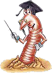

|
Robale w groszku? Taka norma!

Profesor Andrzej Wnuk z Katedry Entomologii Stosowanej Akademii Rolniczej w Krakowie
bez problemu rozpozna³ owada.
- To jest pachówka str±kóweczka - twierdzi naukowiec. - Ona jest najczê¶ciej spotykanym
w groszku zielonym szkodnikiem - dodaje.
Profesor spokojnie t³umaczy, ¿e robak w puszce to nic nadzwyczajnego. Poza tym ma
wszelkie prawo tam przebywaæ.
- Polska norma stanowi, ¿e czê¶æ nasion mo¿e zawieraæ uszkodzenia w tym owady - mówi
profesor Wnuk. - Nie rozumiem, sk±d to zamieszanie. Przecie¿ kupuj±c ¶wie¿e warzywa na
bazarze, bardzo czêsto znajdujemy na nich insekty. Dlaczego z puszkami mia³oby byæ
inaczej? - dziwi siê profesor.
Sprawdzili¶my i rzeczywi¶cie, ani robak, ani producent groszku prawa nie z³amali.
To, ile procent uszkodzonych ziaren zielonego groszku mo¿e trafiæ do przemys³u,
precyzyjnie okre¶la norma dotycz±ca "produktów warzywnych i warzyw konserwowych".
Marta Szewczyk z krakowskiego sanepidu informuje, ¿e ta ilo¶æ nie mo¿e przekroczyæ
1,5 proc. w stosunku do masy "przetworu ods±czonego".
- Choæ norma nie mówi wprost o szkodnikach, a jedynie o plamach i uszkodzeniach, to
dotyczy równie¿ owadów - informuje Szewczyk. - W którym¶ ziarnie mo¿e przecie¿
siedzieæ robak, to siê zdarza i nie ma na to rady - spokojnie t³umaczy.
Mo¿e i racja, ale co z lud¼mi, którzy z jakich¶ powodów nie mog± albo nie chc±
je¶æ miêsa? Musz± bardzo dok³adnie ogl±daæ ka¿dy groszek.
Co powinien zrobiæ producent, gdy w jego produkcie znajdzie siê zgodny z norm± robal?
Na pewno przeprosiny i kilka puszek groszku za³atwi± ca³kowicie sprawê.
Robale fasolowe nie s± szkodliwe dla zdrowia. To normalne bia³ko, tyle ¿e
obrzydliwe - spokojnie t³umaczy Stanis³aw Pawlus, kierownik dzia³u
nadzoru sanitarnego krakowskiego sanepidu. Specjalista twierdzi, ¿e proces
technologiczny nie wyeliminuje wszystkich insektów, które siedz± w groszku. - Nie
broniê producenta, bo konsument powinien dostaæ rzecz nienagann±. Chcê tylko
uzmys³owiæ, ¿e takie przypadki siê zdarzaj± i ¿e ten robal mia³ prawo znale¼æ siê w
puszce - bez cienia w±tpliwo¶ci stwierdza kierownik Pawlus.
Dr £uczaj poleca: Robak na dziko -
Larwy owadów s± smaczne i zdrowe. Maj± smak s³oniny. Mnie smakuj± na surowo. Ale
mo¿na je piec na rozgrzanej patelni. Jednak nie na t³uszczu, bo on zmienia ich smak.
Mo¿na je te¿ dorzuciæ do zupy, wtedy podnosz± warto¶æ kaloryczn± potrawy.
Tylko raz siê zatru³em larwami. Jad³em nieznany gatunek, z czarnymi g³ówkami. A
najbezpieczniej je¶æ bia³e larwy.
|